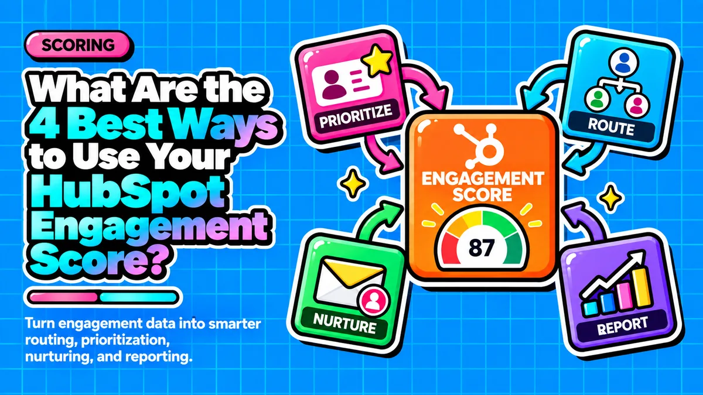

What Are the 4 Best Ways to Use Your HubSpot Engagement Score?

Direct answer: Startup founders can turn a HubSpot engagement score into a revenue driver by operationalizing it four ways: alerting SDRs in real time when a lead gets hot, automatically triggering conversion focused emails, routing and re-prioritizing leads without manual review, and arming reps with behavioral context so their first outreach is specific rather than generic.
- Build engagement-only scoring first and add fit scoring later, once you have enough closed deals to define an ICP.
- Alert SDRs based on velocity, not just total score, since fast point accumulation signals stronger buying intent than slow accumulation.
- Let score thresholds automatically trigger nurture emails, ownership changes, and routing so a small team behaves like a full RevOps function.
- Score decay and per-activity group limits keep the number honest, so alerts, emails, and routing rules stay trustworthy.
- Exposing the behavioral detail behind the score, not just the number, is what lets reps personalize outreach instantly.
Questions this article answers
- What does a HubSpot engagement score actually measure?
- How can you turn the engagement score into a real time SDR alert?
- How can you use the engagement score to trigger conversion focused emails?
- How can you automate lead routing and ownership changes with the engagement score?
- How can you arm reps with engagement context for personalized outreach?
- Why does score decay matter for keeping the engagement score reliable?
- How should you sequence the rollout of these four techniques for revenue impact?
- Plus 5 FAQs answered below
What does a HubSpot engagement score actually measure?
The engagement score measures behavior, such as email opens, page views, and form submissions, while a separate fit score measures demographic quality; startups should build engagement-only scoring first because they rarely have enough closed deals to define a reliable ICP.
HubSpot's Lead Scoring tool separates behavior from identity: engagement scores qualify leads based on their actions, while fit scores rely on demographic information. Many practitioners deliberately keep the two apart, since demographic scores assess lead quality while behavioral scores gauge interest.
This distinction matters for early stage companies. A widely cited implementation guide argues that startups should skip fit scoring at first and run engagement-only scoring until they have enough closed deals to define an ideal customer profile. The engagement score itself is built from signals like email opens and clicks, website page views, form submissions, document views, ad interactions, and workflow enrollments. With AI assisted engagement scoring, HubSpot analyzes past interactions of successful converted leads and offers recommendations to build more precise scores, visible directly on the contact record.
How can you turn the engagement score into a real time SDR alert?
Set up workflow enrollment criteria so HubSpot Score greater than a defined threshold fires an alert only for the highest tier leads, and trigger on velocity of point accumulation rather than absolute score alone.
The highest leverage use of an engagement score is real time notification. Instead of an SDR sorting a list each morning, teams can go to Notifications and Integrations and build a workflow with enrollment criteria set to HubSpot Score greater than a defined number. One implementation guide recommends triggering alerts only on the highest fit and engagement combinations, such as A1, A2, or B1 tiers, so reps do not learn to ignore alerts that fire too often.
Speed matters as much as accuracy. A 2026 lead management analysis notes that a lead who accumulates 30 points in 24 hours is more valuable than one who accumulated 50 points over six months, and recommends a workflow that triggers a Surge Alert property when rapid point accumulation occurs, notifying a rep immediately rather than waiting for an absolute score ceiling.
How can you use the engagement score to trigger conversion focused emails?
Use score-based workflow enrollment so a contact who crosses a threshold is automatically enrolled in a targeted email sequence, and map three or four score bands to distinct message types instead of one generic drip.
HubSpot's workflow tooling supports enrollment criteria based on list membership tied to engagement, so a contact who crosses a threshold can be automatically enrolled in a targeted conversion sequence, then removed to allow re-enrollment the next time they engage again. This creates a compounding effect: an interested lead reads a case study, their score rises, a proof point email fires automatically, they click it, and the score rises again.
A practical framework describes this in lifecycle terms: a top of funnel visit gets a lead on the board as a signal, a mid funnel action keeps the contact in nurture while the score climbs, and a high intent action like a demo request should trigger an automatic, immediate handoff rather than another nurture email. For resource constrained founders, mapping three or four score bands to distinct message types, educational nurture, proof and objection handling, and a direct sales handoff, is more efficient than building dozens of email variants.
How can you automate lead routing and ownership changes with the engagement score?
Workflows can automatically reassign contact ownership from an SDR to an account executive once a score threshold is reached, and routing should check rep availability so hot leads never sit untouched in a general queue.
HubSpot workflows can automatically reassign a contact's ownership from an SDR to an account executive once the contact's score reaches a defined threshold, and for teams running HubSpot alongside another CRM, a contact can be sent over as a new lead once a specified score is reached. This kind of waterfall routing checks ownership, territory, and rep availability before a lead reaches a human queue.
A 2026 lead management analysis calls the common failure mode the "Black Hole" of lead routing, where a lead sits in a general queue or is assigned to an unavailable rep, and recommends that modern routing check rep calendar availability and skip reps marked unavailable in their profile. A simpler variant for small teams is routing lower tier leads to a shared unassigned view where the first rep to claim it gets it, gamifying follow up speed.
How can you arm reps with engagement context for personalized outreach?
Expose the behavioral detail behind the score, not just the number, so reps see recent activity like pricing page views or case study downloads and can reference it in their first outreach touch.
A score alone tells a rep almost nothing; knowing a contact viewed a pricing page twice, opened three product emails, and downloaded a specific case study tells the rep exactly what to reference. HubSpot's lead scoring is built so that lead scores are available directly in the CRM's contact records for complete transparency, which enables this kind of just in time personalization without extra tooling.
Internal alerts should carry this context by design. One implementation guide recommends that internal notifications to a contact owner include the contact's name, company, fit score, and last engagement detail, so the rep does not have to dig through the timeline before reaching out. For a founder wearing the sales hat, this turns a generic check-in email into a specific, relevant follow up.
Why does score decay matter for keeping the engagement score reliable?
Score decay reduces the scores of leads who go inactive, and capping point accumulation per activity type prevents casual browsers from outscoring genuinely engaged leads, which keeps every alert, email trigger, and routing rule trustworthy.
None of the four techniques work if the underlying score is stale or inflated. HubSpot's scoring system includes score decay, so leads inactive for a while have their scores decreased, keeping the team's view of who is actually engaged up to date.
Startups should also cap point accumulation per activity type using HubSpot's group limits, since without a cap someone who casually browses a blog many times can outscore someone who submitted a genuine demo request, undermining trust in every alert, email trigger, and routing rule built on top of the score.
How should you sequence the rollout of these four techniques for revenue impact?
Roll out engagement scoring, alerts, email triggers, and routing over four weeks rather than all at once, since faster response to buyer intent is directly correlated with win rate in B2B sales.
Every one of these four applications compresses the time between a buyer signaling intent and a founder or rep responding, and response time is directly correlated with win rate because prospects are usually evaluating more than one vendor at once. A startup that leaves its engagement score passive in a CRM field is paying for behavioral data it never monetizes.
A practical rollout: in week one, turn on engagement-only scoring and set group limits and decay so the number is trustworthy; in week two, build one workflow that fires an alert to the lead owner only when a contact crosses the top engagement tier, including their most recent activity as context; in week three, build one automated email sequence tied to a mid tier engagement threshold; and in week four, add a routing rule that reassigns or surfaces high tier leads to whichever rep is available, so all four techniques are live and compounding by month's end.
Frequently asked questions
Should startups combine fit and engagement scores from the start?
No, most startups should build engagement-only scoring first because they rarely have enough closed won data to define a reliable ideal customer profile, and can layer fit scoring on top once they have pattern data from real deals.
What is a velocity based alert in HubSpot lead scoring?
It is an alert triggered when a lead accumulates points rapidly, for example 30 points in 24 hours, rather than waiting for the lead to hit an absolute score ceiling, since fast accumulation signals stronger buying intent.
What is the Black Hole of lead routing?
It is when a lead sits untouched in a general queue or is assigned to an unavailable rep; modern routing avoids this by checking rep calendar availability before assigning a lead.
Why should internal alerts include more than just the score number?
A number alone tells a rep little; including the contact's name, company, fit score, and last engagement detail lets the rep personalize their first outreach without digging through the CRM timeline.
What is score decay and why is it necessary?
Score decay automatically lowers the score of leads who have gone inactive, keeping the engagement score an accurate reflection of who is currently interested rather than who was interested months ago.
Sources
- HubSpot Community: Best Practices when using Lead Score (beta)
- HubSpot Lead Scoring product page
- Factors.ai: HubSpot Lead Scoring
- Default.com: HubSpot Lead Scoring
- The Digital Ring: How to Implement Lead Scoring in HubSpot CRM
- AnneOmaly: HubSpot Lead Scoring 101
- Xcellimark: How to Build Lead Scoring in HubSpot (2025 Update)
- CRM Switch: HubSpot Lead Scoring
- HubSpot Community: Increase/Decrease lead score using workflows
- CRM Magnetics: HubSpot Lead Management, Achieving Sub-Second Speed to Lead
- Hamsterstack: How to Configure Predictive Lead Scoring
Want your engagement score wired into real alerts, emails, and routing instead of sitting in a CRM field?
Contact →